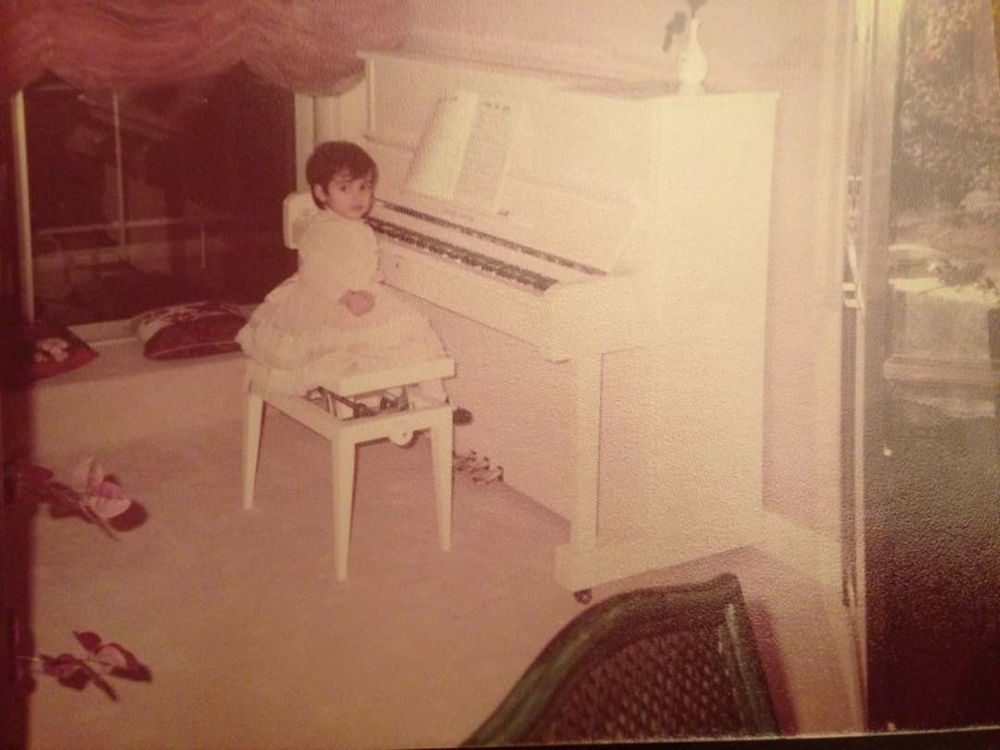
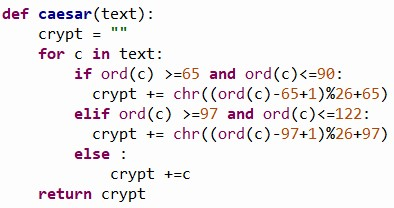

Il fallait que je mette JMV comme mot de passe :) La photo ne souffrira aucun commentaire, elle parle d'elle même...

...
J'ai préféré enregistrer la fin de la lettre. Ca change un peu !
Le mot de la fin.
Ecrire la lettre m'a pris un temps fou. Bien choisir mes mots, racourcir les idées au maximum, etc, mais une fois écrite, créer le jeu a été une chouette aventure qui m'a pris encore plus de temps ! Et indépenamment de la lettre,
j'espère que tu auras pris du plaisir à résoudre ces énigmes que j'ai essayé de personnaliser au maximum, et personnellement j'ai adoré les fabriquer.
Chaque jour j'avais une nouvelle idée, et j'ai dû me brider sans quoi j'y serai encore !
Je remercie CHAT GPT sans qui les traductions en Anglais et en Allemand auraient été impossibles. Et contrairement à l'informatique, j'avoue que j'ai été bien incapable de vérifier la qualité des traductions, surtout celle en Allemand !
Crypter la partie 1 de la lettre avec la méthode de Caesar était facile : pas plus de 10 lignes de code que tu peux lire sur l'image juste en dessous, pour ta culture ! Par contre coder le petit puzzle m'a donné un peu de fil à retordre avec pas mal de petits buggs mais rien d'insurmontable.

Les mots de passe ont tous une signification forte pour moi :
LUPIN me rappelle les quelques jours où nous avons vécu comme j'aurais aimé vivre avec toi toute ma vie
22 comme je l'ai déjà dit, c'est mon nombre préféré et on le retrouve par un calcul dans nos dates de naissance
974, bon bah c'est la Réunion évidemment, et je t'avoue que j'ai pas mal galéré à faire en sorte que le résultat de l'énigme donne 974 en partant d'un calcul de moyenne et de variance.
D'ailleurs pour çà j'ai utilisé une propriété sympathique : j'ai découvert (et je m'en suis servi) que 5²+5²=1²+7²
JMV, je ne pense pas avoir besoin de t'expliquer sa signification :)
Pour ce qui est de la lettre, c'est simplement une suite de mots qui décrivent ce que j'ai pu voir, entendre et ressentir pendant ces heures passées avec toi durant les dernières vacances.
Par contre je voulais que tu prennes le temps de la lire, et comme je sais que ton métier est chronophage, j'avoue que j'avais peur, peut-être à tort, que tu la lises en cinq minutes dans ton bureau
entre deux réunions sans prendre le temps de t'imprégner de son contenu. C'est pour ça que j'ai eu l'idée de la lettre en morceaux, mais maintenant que tu es arrivée jusqu'ici, tu peux la télécharger en entier et en Français en cliquant
sur cette plume ( qui au passage est l'icône officielle de mon application d'édition de cours de maths ) puis la relire tranquillement autant de fois que tu le voudras.